Dynamic Programming (DP) is an algorithm-design method used when the solution to a problem can be viewed as the result of a sequence of decisions. Instead of committing to a locally best choice at every step (as the greedy method does), DP records the optimal values of subproblems and combines them, guaranteeing a globally optimal answer.Dynamic Programming (DP) 是一種設計演算法的方法，適合用在「整個解可以看成一連串決策的結果」的問題上。它跟 greedy 不一樣：greedy 每一步都只挑當下看起來最好的；DP 則是把各個子問題的最佳解記下來，再把它們組合起來，這樣才保證拿到的是全域最佳解。
Key ideas this chapter develops:這一章會帶你建立的幾個重點：
Topics covered: multistage graph & shortest path (forward/backward reasoning), principle of optimality, 0/1 knapsack, forward vs. backward approach, plus further DP applications — resource allocation, traveling salesperson, longest common subsequence, 0/1 knapsack as a multistage graph, and optimal binary search trees.這章會講到：multistage graph 與最短路徑（forward／backward reasoning）、principle of optimality、0/1 knapsack、forward vs. backward approach，再加上幾個 DP 的經典應用 — resource allocation、traveling salesperson、longest common subsequence、把 0/1 knapsack 畫成 multistage graph，還有 optimal binary search trees。
To find a shortest path in a multistage graph, the greedy method makes the cheapest decision at each stage. This can fail.想在 multistage graph 上找最短路徑，greedy 的做法是每一個 stage 都挑當下最便宜的那條邊。問題是，這樣會出包。
1 + 2 + 5 = 8 — the greedy choice. (The slide states only this sum. Greedy is not guaranteed optimal on a multistage graph — see below, where greedy gives 23 but the true optimum is 9.)最直觀的 greedy（每次都挑出去最便宜的邊）：
1 + 2 + 5 = 8 — 這就是 greedy 給的。（投影片只列了這個總和。在 multistage graph 上 greedy 不保證最佳 — 看下面：greedy 給 23，但真正的最佳解是 9。）S → A → D → T:
1 + 4 + 18 = 23 — far from optimal.從 S → A → D → T 走的 greedy：
1 + 4 + 18 = 23 — 離最佳差很遠。S → C → F → T = 5 + 2 + 2 = 9.真正的最短路徑是：
S → C → F → T = 5 + 2 + 2 = 9。So greedy gives 23 while the optimum is 9. DP is needed because the right early decision (go to C, an expensive-looking first edge of cost 5) only pays off later.所以 greedy 給 23，最佳卻是 9。會需要 DP 是因為：正確的第一步（走去 C，第一條邊看起來很貴、要 5）其實要到後面才會回本。
A multistage graph G = (V, E) is a directed graph in which:一張 multistage graph G = (V, E)是一張有向圖，它滿足：
k ≥ 2 disjoint sets V₁, V₂, …, V_k (with 1 ≤ i ≤ k).所有節點被切成 k ≥ 2 個互不相交的集合 V₁, V₂, …, V_k（1 ≤ i ≤ k）。⟨u, v⟩ ∈ E goes from one stage to the next: u ∈ Vᵢ and v ∈ V_{i+1} for some i, 1 ≤ i < k.每條邊 ⟨u, v⟩ ∈ E 都是從某個 stage 連到下一個 stage：存在某個 i 使得 u ∈ Vᵢ、v ∈ V_{i+1}，1 ≤ i < k。|V₁| = |V_k| = 1. Call the lone source s ∈ V₁ and the lone sink t ∈ V_k.第一個跟最後一個 stage 都只有一個節點：|V₁| = |V_k| = 1。把這唯一的起點叫 source s ∈ V₁，唯一的終點叫 sink t ∈ V_k。Each set Vᵢ defines a stage of the graph.每個集合 Vᵢ 就構成圖的一個 stage。
The multistage-graph problem: find a minimum-cost path from s (in V₁) to t (in V_k).multistage-graph 問題：找一條從 s（在 V₁）到 t（在 V_k）的最小成本路徑。
The slides use a 4-stage graph with vertices S (stage 1); A, B, C (stage 2); D, E, F (stage 3); T (stage 4). The edge weights below are consistent with every numeric result in the deck (e.g. d(S,T)=9, d(A,T)=22, d(B,T)=18, d(C,T)=4).投影片用的是一張 4 個 stage 的圖：節點 S（stage 1）；A, B, C（stage 2）；D, E, F（stage 3）；T（stage 4）。下面這些邊的權重，跟投影片裡每一個算出來的數字都對得起來（例如 d(S,T)=9、d(A,T)=22、d(B,T)=18、d(C,T)=4）。
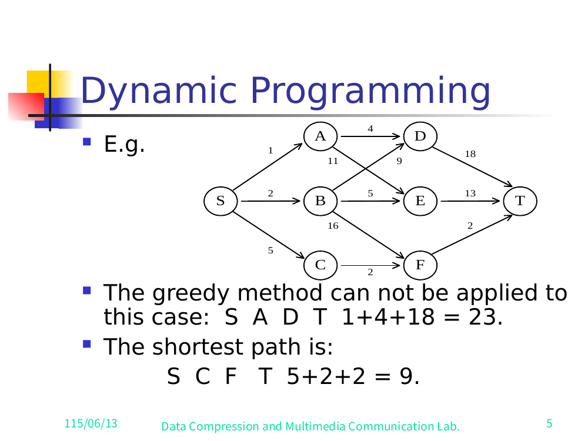
S A D T = 1+4+18 = 23; true shortest path S C F T = 5+2+2 = 9.投影片 5 — 完整的 multistage graph。Greedy S A D T = 1+4+18 = 23；真正的最短路徑 S C F T = 5+2+2 = 9。✅ Verified against slide 5 (the full multistage-graph figure). Every edge weight below was read directly off the rendered slide and matches exactly. The companion abstract figures on slide 6 (
S→{A,B,C}→T) and slide 7 (A→{D,E}→T) confirmS→A=1, S→B=2, S→C=5andA→D=4, A→E=11.✅ 已對照投影片 5（完整的 multistage-graph 圖）核對過。下面每一個邊權重都是直接從算好的投影片讀出來的，完全吻合。投影片 6（S→{A,B,C}→T）和投影片 7（A→{D,E}→T）這兩張示意圖也佐證了S→A=1, S→B=2, S→C=5和A→D=4, A→E=11。
| Edge邊 | Cost成本 | Edge邊 | Cost成本 |
|---|---|---|---|
| S → A | 1 | A → D | 4 |
| S → B | 2 | A → E | 11 |
| S → C | 5 | B → D | 9 |
| D → T | 18 | B → E | 5 |
| E → T | 13 | B → F | 16 |
| F → T | 2 | C → F | 2 |
Stages: V₁={S}, V₂={A,B,C}, V₃={D,E,F}, V₄={T}.各個 stage：V₁={S}、V₂={A,B,C}、V₃={D,E,F}、V₄={T}。
✅ Verified against slide 5:
Tis the final singleton stage. The penultimate-stage verticesD, E, Fconnect directly toTwith the weightsD→T=18,E→T=13,F→T=2, as drawn on the slide and confirmed by the worked linesd(D,T)=18,d(E,T)=13,d(F,T)=2.✅ 已對照投影片 5 核對：T是最後那個只有一個節點的 stage。倒數第二個 stage 的節點D, E, F直接連到T，權重是D→T=18、E→T=13、F→T=2，這跟投影片畫的一致，也跟算式d(D,T)=18、d(E,T)=13、d(F,T)=2對得上。
Define d(X, T) = cost of the shortest path from vertex X to the sink T. Work from the sink backward toward the source. (Base cases at the stage just before T: d(D,T)=18, d(E,T)=13, d(F,T)=2.)定義 d(X, T) = 從節點 X 到 sink T 的最短路徑成本。做法是從 sink 往回推，一路推回 source。（base case 在 T 前一個 stage：d(D,T)=18、d(E,T)=13、d(F,T)=2。）
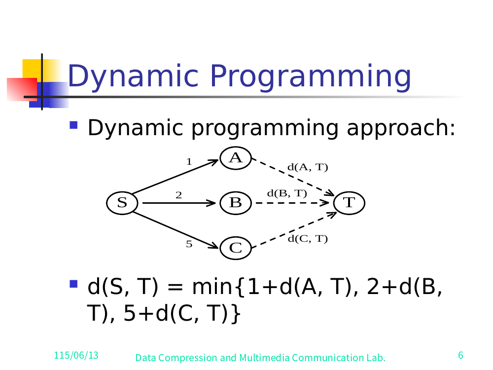
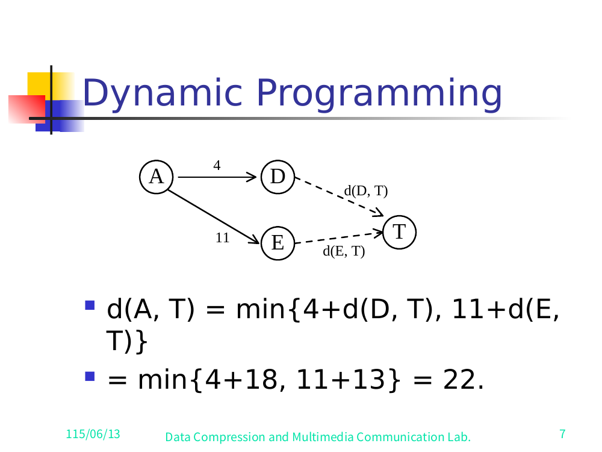
d(C, T) = min{ 2 + d(F, T) }
= 2 + 2
= 4
d(A, T) = min{ 4 + d(D, T), 11 + d(E, T) }
= min{ 4 + 18, 11 + 13 }
= min{ 22, 24 }
= 22
d(B, T) = min{ 9 + d(D, T), 5 + d(E, T), 16 + d(F, T) }
= min{ 9 + 18, 5 + 13, 16 + 2 }
= min{ 27, 18, 18 }
= 18
d(S, T) = min{ 1 + d(A, T), 2 + d(B, T), 5 + d(C, T) }
= min{ 1 + 22, 2 + 18, 5 + 4 }
= min{ 23, 20, 9 }
= 9
Answer: d(S, T) = 9, achieved via S → C → F → T.答案：d(S, T) = 9，走 S → C → F → T 達成。
This style — express each vertex's optimal cost in terms of vertices closer to the sink, then resolve from the sink backward — is called backward reasoning.這種做法 — 把每個節點的最佳成本，用更靠近 sink 的節點來表示，再從 sink 往回解 — 就叫 backward reasoning。
Define d(S, X) = cost of the shortest path from the source S to vertex X. Work from the source forward toward the sink.定義 d(S, X) = 從 source S 到節點 X 的最短路徑成本。這次反過來，從 source 往前推，一路推到 sink。
Base (stage-2 vertices, directly reachable from S):base（stage 2 的節點，從 S 一步就到）：
d(S, A) = 1
d(S, B) = 2
d(S, C) = 5
Stage-3 vertices:stage 3 的節點：
d(S, D) = min{ d(S, A) + d(A, D), d(S, B) + d(B, D) }
= min{ 1 + 4, 2 + 9 }
= min{ 5, 11 }
= 5
d(S, E) = min{ d(S, A) + d(A, E), d(S, B) + d(B, E) }
= min{ 1 + 11, 2 + 5 }
= min{ 12, 7 }
= 7
d(S, F) = min{ d(S, A) + d(A, F), d(S, B) + d(B, F) }
= min{ 2 + 16, 5 + 2 }
= min{ 18, 7 }
= 7
✅ Verified against slide 9 — with a caveat about the slide itself. The slide literally prints
d(S,F)=min{d(S,A)+d(A,F), d(S,B)+d(B,F)} = min{2+16, 5+2} = 7. But the graph (slide 5) has no edgesA→ForB→F's-pair that produce these constants under those labels: F's only incoming edges areB→F=16andC→F=2. So the slide's labels are wrong; the numbers are right. The correct reading consistent with the graph isd(S,F)=min{d(S,B)+d(B,F), d(S,C)+d(C,F)} = min{2+16, 5+2} = 7. Resultd(S,F)=7is firm; the slide's term-labels (A,B) are a typo for (B,C).✅ 已對照投影片 9 核對 — 但投影片本身有個小毛病要提醒。投影片上寫的是d(S,F)=min{d(S,A)+d(A,F), d(S,B)+d(B,F)} = min{2+16, 5+2} = 7。可是圖（投影片 5）根本沒有A→F這條邊，也湊不出那組標號對應的常數：F 的入邊只有B→F=16和C→F=2。所以投影片的標號寫錯了，數字是對的。跟圖一致的正確讀法是d(S,F)=min{d(S,B)+d(B,F), d(S,C)+d(C,F)} = min{2+16, 5+2} = 7。結論d(S,F)=7很穩；投影片把標號 (A,B) 打成 (B,C) 的 typo 而已。
Final stage:最後一個 stage：
d(S, T) = min{ d(S, D) + d(D, T), d(S, E) + d(E, T), d(S, F) + d(F, T) }
= min{ 5 + 18, 7 + 13, 7 + 2 }
= min{ 23, 20, 9 }
= 9
Answer: d(S, T) = 9 — the same optimum, reached by reasoning forward.答案：d(S, T) = 9 — 一樣的最佳解，這次是往前推得到的。
Here each vertex's optimal cost is expressed in terms of vertices closer to the source, then resolved from the source forward — forward reasoning.這裡每個節點的最佳成本，是用更靠近 source 的節點來表示，再從 source 往前解 — 這就是 forward reasoning。
Statement. Suppose that, in solving a problem, we must make a sequence of decisions D₁, D₂, …, Dₙ. If this sequence is optimal, then the last k decisions (for any 1 ≤ k ≤ n) must themselves be optimal.敘述。假設解一個問題時，你得做一連串決策 D₁, D₂, …, Dₙ。如果這整串是最佳的，那麼最後 k 個決策（對任意 1 ≤ k ≤ n）本身也一定是最佳的。
Shortest-path corollary.
If i, i₁, i₂, …, j is a shortest path from i to j, then the suffix i₁, i₂, …, j must be a shortest path from i₁ to j.套到最短路徑上的推論。如果 i, i₁, i₂, …, j 是從 i 到 j 的最短路徑，那它的後半段 i₁, i₂, …, j 一定也是從 i₁ 到 j 的最短路徑。
Intuition: if the suffix were not optimal, we could replace it with a cheaper suffix and obtain a cheaper overall path — contradicting optimality of the whole.直覺：假如後半段不是最佳，那你就能把它換成更便宜的後半段，整條路就更便宜了 — 這跟「整條是最佳」矛盾，所以後半段一定也是最佳。
Consequence: if a problem can be described by a multistage graph, then it can be solved by dynamic programming.結論：只要一個問題能用 multistage graph 描述，它就能用 dynamic programming 解。
Represent the problem as KNAP(k, j, Y):把問題寫成 KNAP(k, j, Y) 的形式：
maximize Σ_{i=k}^{j} pᵢ·xᵢ
subject to Σ_{i=k}^{j} wᵢ·xᵢ ≤ Y
xᵢ = 0 or 1, k ≤ i ≤ j
The full 0/1 knapsack problem is then KNAP(1, n, M) — all n objects, capacity M.那麼完整的 0/1 knapsack 問題就是 KNAP(1, n, M) — 全部 n 個物品、容量 M。
Let y₁, y₂, …, yₙ be an optimal sequence of 0/1 values for x₁, x₂, …, xₙ.設 y₁, y₂, …, yₙ 是 x₁, x₂, …, xₙ 的一組最佳 0/1 取法。
y₁ = 0: then y₂, y₃, …, yₙ must be an optimal sequence for KNAP(2, n, M).
(If it weren't, we could improve it and thereby improve the whole — contradiction.)如果 y₁ = 0：那 y₂, y₃, …, yₙ 一定是 KNAP(2, n, M) 的最佳取法。
（不然的話，你就能改進它、連帶把整體也改得更好 — 矛盾。）y₁ = 1: then y₂, y₃, …, yₙ must be an optimal sequence for KNAP(2, n, M − w₁) (capacity reduced by the weight of object 1), by the principle of optimality.如果 y₁ = 1：那由 principle of optimality，y₂, y₃, …, yₙ 一定是 KNAP(2, n, M − w₁) 的最佳取法（容量扣掉物品 1 的重量）。Let gⱼ(y) = the value of an optimal solution to KNAP(j+1, n, y).設 gⱼ(y) = KNAP(j+1, n, y) 最佳解的值。
Then g₀(M) is the value of an optimal solution to the whole problem KNAP(1, n, M).那麼 g₀(M) 就是整個問題 KNAP(1, n, M) 最佳解的值。
Since x₁ can be 0 or 1, the principle of optimality gives:因為 x₁ 只能是 0 或 1，由 principle of optimality 得到：
g₀(M) = max{ g₁(M), g₁(M − w₁) + p₁ }
and in general:一般式則是：
gᵢ(y) = max{ g_{i+1}(y), g_{i+1}(y − w_{i+1}) + p_{i+1} }
i+1 (x_{i+1}=0).第一項：跳過物品 i+1（x_{i+1}=0）。i+1 (x_{i+1}=1), gaining profit p_{i+1} and using capacity w_{i+1}.第二項：拿物品 i+1（x_{i+1}=1），賺到利潤 p_{i+1}，但吃掉容量 w_{i+1}。gₙ(y) = 0 for all y
Solve backward through the index using the recurrence:用這條 recurrence、沿著 index 由大到小往回解：
gₙ(y) obtain g_{n−1}(y) (apply the recurrence with i = n−1).從 gₙ(y) 算出 g_{n−1}(y)（把 recurrence 代入 i = n−1）。g_{n−1}(y) obtain g_{n−2}(y).再從 g_{n−1}(y) 算出 g_{n−2}(y)。g₁(y) and finally g₀(M) — the answer.一直重複下去，最後算到 g₁(y)，再算出 g₀(M) — 就是答案。Let x₁, x₂, …, xₙ be the decision variables.設 x₁, x₂, …, xₙ 是決策變數。
| Approach做法 | Decision xᵢ is formulated in terms of…決策 xᵢ 是用什麼來表示… |
Knapsack recurrenceKnapsack recurrence | Boundary邊界條件 |
|---|---|---|---|
| Forward | optimal decision sequences for x_{i+1}, …, xₙ後面 x_{i+1}, …, xₙ 的最佳決策序列 |
gᵢ(y) = max{ g_{i+1}(y), g_{i+1}(y − w_{i+1}) + p_{i+1} } |
g₀(M) = max{ g₁(M), g₁(M − w₁) + p₁ } |
| Backward | optimal decision sequences for x₁, …, x_{i−1}前面 x₁, …, x_{i−1} 的最佳決策序列 |
gᵢ(y) = max{ g_{i−1}(y), g_{i−1}(y − wᵢ) + pᵢ } |
gₙ(M) = max{ g_{n−1}(M), g_{n−1}(M − wₙ) + pₙ } |
In the backward approach, gᵢ(y) is the optimal value of KNAP(1, i, y).在 backward approach 裡，gᵢ(y) 就是 KNAP(1, i, y) 的最佳值。
Crucial subtlety about solving direction:關於求解方向，有個很容易搞混的重點：
(Formulation direction and solution direction are opposite to one another.)（寫式子的方向跟解式子的方向，剛好相反。）
To solve a problem by DP, do either:想用 DP 解問題，二擇一就好：
In the textbook, these two are shown to be equivalent.課本裡會證明這兩種其實是等價的。
The remaining slides apply the same machinery to several classic problems.剩下的投影片，就是把同一套工具套到幾個經典問題上。
m resources, n projects.m 份資源、n 個專案。p(i, j) = profit when j resources are allocated to project i.p(i, j) = 把 j 份資源分給專案 i 時的利潤。Profit table (deck example, slide 19). Rows = project i, columns = number of resources j:利潤表（投影片 19 的範例）。列 = 專案 i，欄 = 資源份數 j：
| Project \ Resources專案 \ 資源 | 1 | 2 | 3 |
|---|---|---|---|
| 1 | 2 | 8 | 9 |
| 2 | 5 | 6 | 7 |
| 3 | 4 | 4 | 4 |
| 4 | 2 | 4 | 5 |
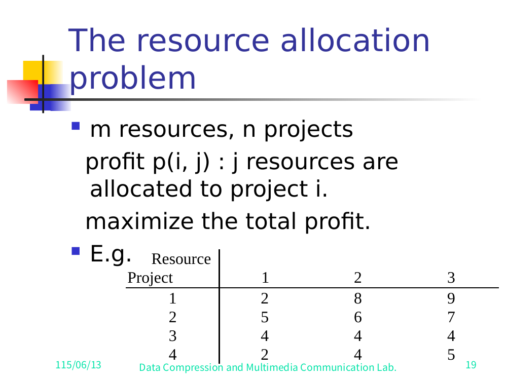
Multistage-graph model. A node (i, j) means i resources allocated to projects 1, 2, …, j (i.e. the first j projects collectively use i resources).用 multistage-graph 來建模。節點 (i, j) 代表把 i 份資源分給專案 1, 2, …, j（也就是前 j 個專案合起來用掉 i 份資源）。
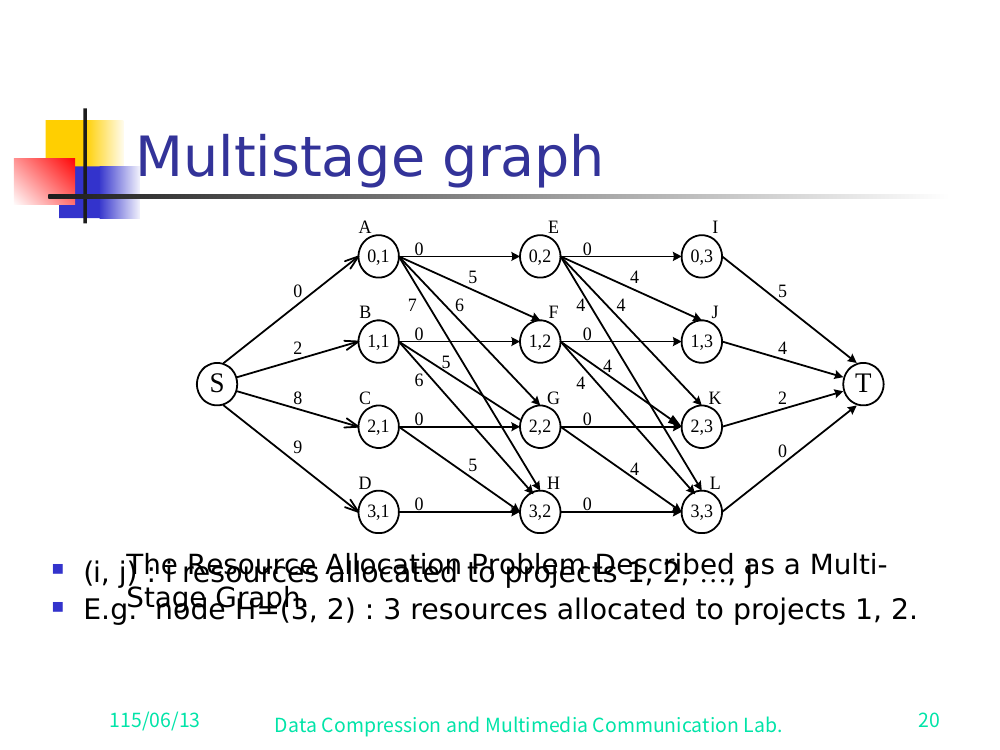
Example: node H = (3, 2) ⇒ 3 resources allocated across projects 1 and 2.舉例：節點 H = (3, 2) ⇒ 把 3 份資源分給專案 1 和 2。
The problem becomes find the longest (max-profit) path from S to T.這樣問題就變成從 S 到 T 找最長（利潤最大）的路徑。
Worked example from the deck:投影片裡實際算的例子：
S → C → H → L → T, 8 + 5 = 13
with the interpretation: - 2 resources allocated to project 1, - 1 resource allocated to project 2, - 0 resources to projects 3 and 4.解讀成： - 2 份資源給專案 1， - 1 份資源給專案 2， - 專案 3 和 4 各分到 0 份。
✅ Verified against slides 19–21. Slide 20 shows the full figure "The Resource Allocation Problem Described as a Multi-Stage Graph"; slide 21 states the winning path and allocation verbatim. Node naming on slide 20 (each labeled
(i,j)=iresources allocated to the firstjprojects): - Stage 1:S. Stage 2:A=(0,1),B=(1,1),C=(2,1),D=(3,1). Stage 3:E=(0,2),F=(1,2),G=(2,2),H=(3,2). Stage 4:I=(0,3),J=(1,3),K=(2,3),L=(3,3). Stage 5:T. - Edge weights are the profit increments from the table above. The S-edges readS→A=0, S→B=2, S→C=8, S→D=9(project-1 profits for 0/1/2/3 resources). The winning path is shown bold on slide 21:S —8→ C —5→ H —0→ L —0→ T, total8+5=13.✅ 已對照投影片 19–21 核對。投影片 20 是完整的圖「The Resource Allocation Problem Described as a Multi-Stage Graph」；投影片 21 一字不差地列出獲勝路徑跟分配方式。投影片 20 的節點命名（每個標(i,j)= 分i份資源給前j個專案）： - Stage 1：S。Stage 2：A=(0,1)、B=(1,1)、C=(2,1)、D=(3,1)。Stage 3：E=(0,2)、F=(1,2)、G=(2,2)、H=(3,2)。Stage 4：I=(0,3)、J=(1,3)、K=(2,3)、L=(3,3)。Stage 5：T。 - 邊的權重就是上面那張表的利潤增量。S 出去的邊是S→A=0, S→B=2, S→C=8, S→D=9（專案 1 分到 0/1/2/3 份資源的利潤）。獲勝路徑在投影片 21 用粗體標出來：S —8→ C —5→ H —0→ L —0→ T，總和8+5=13。Note: slide 20 is a dense diagram; many interior edge labels overlap and only the S-stage edges and the winning-path edges are read with full confidence. The path, totals, and allocation are confirmed exactly.注意：投影片 20 這張圖很密，內部很多邊的標號都疊在一起，只有 S 那一個 stage 的邊跟獲勝路徑上的邊能完全確定。路徑、總和、分配方式都已精確核對無誤。
Given a directed graph with a cost matrix, find the shortest tour that starts at vertex 1, visits every vertex exactly once, and returns to 1.給你一張帶 cost matrix 的有向圖，要找一條最短的 tour：從節點 1 出發，每個節點剛好走一次，最後再回到 1。
Small example (slide 22). Directed graph on 4 vertices with cost matrix (rows = from, cols = to; ∞ = no edge):小範例（投影片 22）。4 個節點的有向圖，附 cost matrix（列 = 從哪走，欄 = 走到哪；∞ = 沒有這條邊）：
| 1 | 2 | 3 | 4 | |
|---|---|---|---|---|
| 1 | ∞ | 2 | 10 | 5 |
| 2 | 2 | ∞ | 9 | ∞ |
| 3 | 4 | 3 | ∞ | 4 |
| 4 | 6 | 8 | 7 | ∞ |
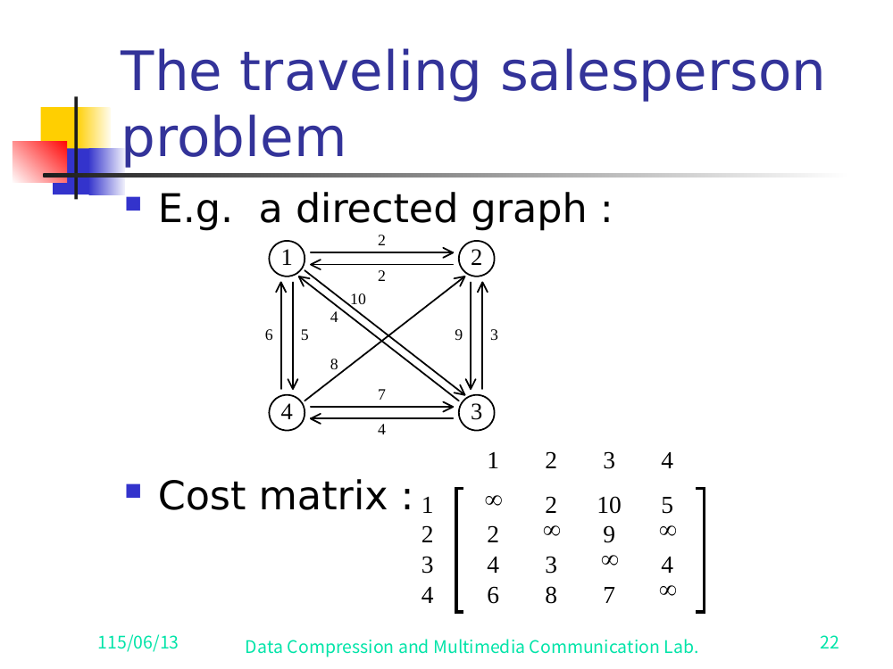
Shortest tour: 1, 4, 3, 2, 1 → 5 + 7 + 3 + 2 = 17
Tour multistage graph (slide 23, "Fig. A Multi-Stage Graph Describing All Possible Tours of a Directed Graph").把所有 tour 畫成 multistage graph（投影片 23，「Fig. A Multi-Stage Graph Describing All Possible Tours of a Directed Graph」）。
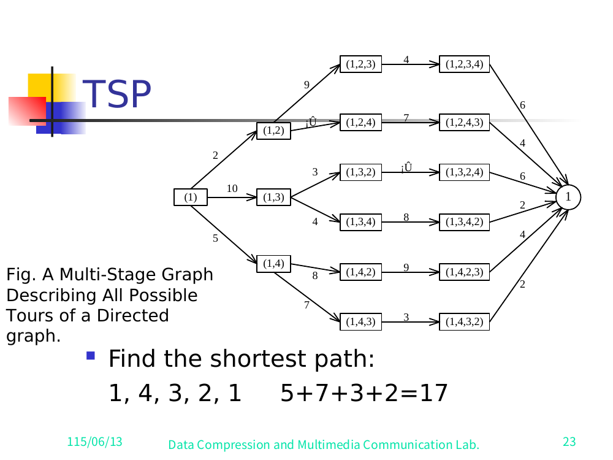
Root (1) branches by first vertex chosen, edge costs c(1,k): (1,2) cost 2, (1,3) cost 10, (1,4) cost 5. Each then expands to the third vertex, then the fourth, then returns to 1. The bottom branch realizes the optimum: (1) →5 (1,4) →7 (1,4,3) →3 (1,4,3,2) →2 1, total 17.根節點 (1) 依「第一個選哪個節點」分岔，邊的成本是 c(1,k)：(1,2) 花 2、(1,3) 花 10、(1,4) 花 5。接著每條再展開到第三個節點、第四個節點，最後繞回 1。最下面那條分支就是最佳解：(1) →5 (1,4) →7 (1,4,3) →3 (1,4,3,2) →2 1，總和 17。
Multistage-graph view. All possible tours form a multistage graph (one stage per "next vertex chosen"). Partial tours that end at the same vertex with the same remaining set can be merged:用 multistage-graph 的角度看。所有可能的 tour 合起來就是一張 multistage graph（每「選下一個節點」就是一個 stage）。如果兩段 partial tour 結束在同一個節點、而且剩下要走的節點集合也一樣，就可以合併成同一個節點：
Suppose 6 vertices. We can combine the partial tours
{1, 2, 3, 4}and{1, 3, 2, 4}into one node, because: the last vertex visited is the same (here vertex 3 in the deck's phrasing), and the remaining vertices to visit are the same (4, 5, 6). Their futures are identical, so they share a subproblem.假設有 6 個節點。partial tour{1, 2, 3, 4}和{1, 3, 2, 4}可以合成同一個節點，因為：最後停的節點一樣（投影片的講法是節點 3），剩下要走的節點也一樣（4, 5, 6）。它們接下來要面對的局面完全相同，所以共用同一個子問題。
DP recurrence (Held–Karp). Let g(i, S) = the length of a shortest path that starts at vertex i, goes through all vertices in S, and terminates at vertex 1.DP recurrence（Held–Karp）。設 g(i, S) = 一條最短路徑的長度，這條路徑從節點 i 出發，走過 S 裡所有節點，最後停在節點 1。
g(1, V − {1}) = min_{2 ≤ k ≤ n} { c_{1k} + g(k, V − {1, k}) }最佳 tour 的長度（投影片 25）：
g(1, V − {1}) = min_{2 ≤ k ≤ n} { c_{1k} + g(k, V − {1, k}) }g(i, S) = min_{j ∈ S} { c_{ij} + g(j, S − {j}) }一般式（投影片 25）：
g(i, S) = min_{j ∈ S} { c_{ij} + g(j, S − {j}) }g(i, ∅) = c_{i1}.base：g(i, ∅) = c_{i1}。✅ Verified against slide 25. The slide prints both recurrences (with the
min_{2≤k≤n}andmin_{j∈S}ranges) exactly as above; theg(i,S)definition is stated verbatim on slide 25.✅ 已對照投影片 25 核對。投影片上兩條 recurrence（含min_{2≤k≤n}和min_{j∈S}的範圍）都跟上面一模一樣；g(i,S)的定義也是投影片 25 一字不差寫出來的。
Time complexity (slide 25, verbatim).時間複雜度（投影片 25 原文）。
n + Σ_{k=2}^{n-1} (n−1)·C(n−2, n−k)·(n−k) = O(n² · 2ⁿ)
✅ Verified against slide 25: the slide shows the explicit sum
n + Σ_{k=2} (n−1)(ⁿ⁻²_{n−k})(n−k) = O(n² 2ⁿ), the standard Held–Karp bound — exponential but far better than(n−1)!brute force.✅ 已對照投影片 25 核對：投影片列出完整的總和n + Σ_{k=2} (n−1)(ⁿ⁻²_{n−k})(n−k) = O(n² 2ⁿ)，這就是標準的 Held–Karp 界 — 雖然是指數級，但已經比(n−1)!的暴力法好太多了。
Subsequence. A subsequence of a string A is obtained by deleting 0 or more symbols from A (not necessarily consecutive).
For A = b a c a d: examples include ad, ac, bac, acad, bacad, bcd.Subsequence（子序列）。字串 A 的一個 subsequence，就是從 A 裡刪掉 0 個或多個字元後剩下的（被刪的不用連在一起）。
以 A = b a c a d 為例：ad, ac, bac, acad, bacad, bcd 都算。
Common subsequence. Of A = b a c a d and B = a c c b a d c b: e.g. ad, ac, bac, acad.Common subsequence（共同子序列）。A = b a c a d 跟 B = a c c b a d c b 的共同子序列，例如 ad, ac, bac, acad。
Longest common subsequence of A and B: a c a d.A 和 B 的 longest common subsequence：a c a d。
Let A = a₁ a₂ … a_m and B = b₁ b₂ … b_n.
Let L_{i,j} = length of the LCS of the prefixes a₁…aᵢ and b₁…bⱼ.設 A = a₁ a₂ … a_m、B = b₁ b₂ … b_n。
設 L_{i,j} = 前綴 a₁…aᵢ 跟 b₁…bⱼ 的 LCS 長度。
┌ L_{i-1, j-1} + 1 if aᵢ = bⱼ
L_{i,j} = │
└ max{ L_{i-1, j}, L_{i, j-1} } if aᵢ ≠ bⱼ
Boundary: L_{0,0} = L_{0,j} = L_{i,0} = 0 for 1 ≤ i ≤ m, 1 ≤ j ≤ n.邊界條件：L_{0,0} = L_{0,j} = L_{i,0} = 0，其中 1 ≤ i ≤ m、1 ≤ j ≤ n。
(Reference: Fig. 8-17, "The Dynamic Programming Approach to Solve the Longest Common Subsequence Problem.")（參考：Fig. 8-17，「The Dynamic Programming Approach to Solve the Longest Common Subsequence Problem.」）
Recovering the subsequence. After all L_{i,j} are filled in (for A = b a c a d, B = a c c b a d c b), trace back through the table to recover the actual LCS (a c a d).把子序列還原出來。等所有 L_{i,j} 都填好之後（針對 A = b a c a d、B = a c c b a d c b），沿著表格往回追（trace back），就能把真正的 LCS（a c a d）找回來。
The L table (slide 29, verified). Rows = A = b a c a d (plus a 0-row), columns = B = a c c b a d c b (plus a 0-column):L 表（投影片 29，已核對）。列 = A = b a c a d（多一個 0 列），欄 = B = a c c b a d c b（多一個 0 欄）：
| A \ BA \ B | a | c | c | b | a | d | c | b | |
|---|---|---|---|---|---|---|---|---|---|
| 0 | 0 | 0 | 0 | 0 | 0 | 0 | 0 | 0 | |
| b | 0 | 0 | 0 | 0 | 1 | 1 | 1 | 1 | 1 |
| a | 0 | 1 | 1 | 1 | 1 | 2 | 2 | 2 | 2 |
| c | 0 | 1 | 2 | 2 | 2 | 2 | 2 | 3 | 3 |
| a | 0 | 1 | 2 | 2 | 2 | 3 | 3 | 3 | 3 |
| d | 0 | 1 | 2 | 2 | 2 | 3 | 4 | 4 | 4 |
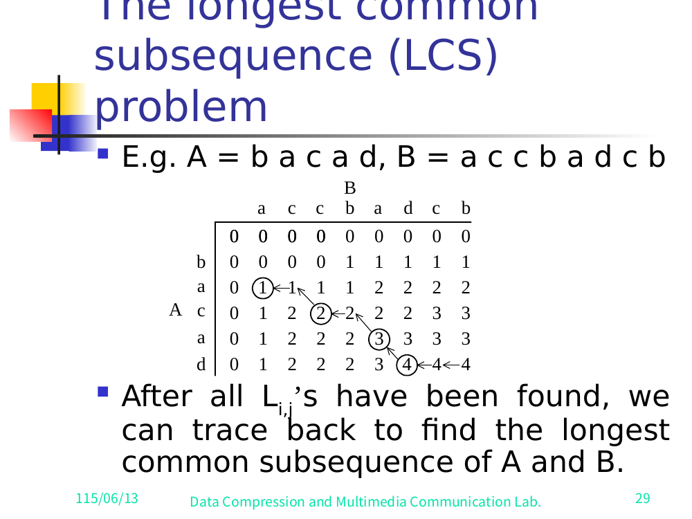
a c a d.投影片 29 — LCS 的 L 表，圈起來的 trace-back 1 → 2 → 3 → 4 給出 a c a d。The slide circles the trace-back cells 1 → 2 → 3 → 4 (the a, c, a, d matches), giving LCS = a c a d (length 4 = bottom-right cell).投影片把 trace-back 的格子 1 → 2 → 3 → 4 圈起來（也就是 a、c、a、d 這幾個配對），得到 LCS = a c a d（長度 4 = 右下角那格）。
The same 0/1 knapsack problem of §6 can be drawn as a multistage graph.§6 那個 0/1 knapsack 問題，其實也可以畫成一張 multistage graph。
n objects, weights W₁, W₂, …, Wₙ
profits P₁, P₂, …, Pₙ
capacity M
maximize Σ Pᵢ·xᵢ
subject to Σ Wᵢ·xᵢ ≤ M
xᵢ = 0 or 1, 1 ≤ i ≤ n
Deck example data (slide 30). M = 10, three objects:投影片 30 的範例資料。M = 10，三個物品：
| i | Wᵢ | Pᵢ |
|---|---|---|
| 1 | 10 | 40 |
| 2 | 3 | 20 |
| 3 | 5 | 30 |
The staged graph (slide 31). Nodes are labeled by the partial decision vector. S branches on x₁: S →(x₁=1, weight 40) "1" and S →(x₁=0, weight 0) "0". Each node then branches on x₂ (edge weight P₂=20 if x₂=1, else 0), then on x₃ (edge weight P₃=30 if x₃=1, else 0), then a weight-0 edge to T. (Infeasible high-capacity branches are pruned — e.g. taking object 1 at weight 10 leaves no room.)分 stage 的圖（投影片 31）。節點是用「目前的部分決策向量」來標。S 先依 x₁ 分岔：S →(x₁=1, weight 40) "1" 和 S →(x₁=0, weight 0) "0"。每個節點再依 x₂ 分岔（x₂=1 時邊權重 P₂=20，否則 0），再依 x₃ 分岔（x₃=1 時邊權重 P₃=30，否則 0），最後接一條權重 0 的邊到 T。（不可行、超過容量的分支會被剪掉 — 例如拿了重量 10 的物品 1，就塞不下別的了。）
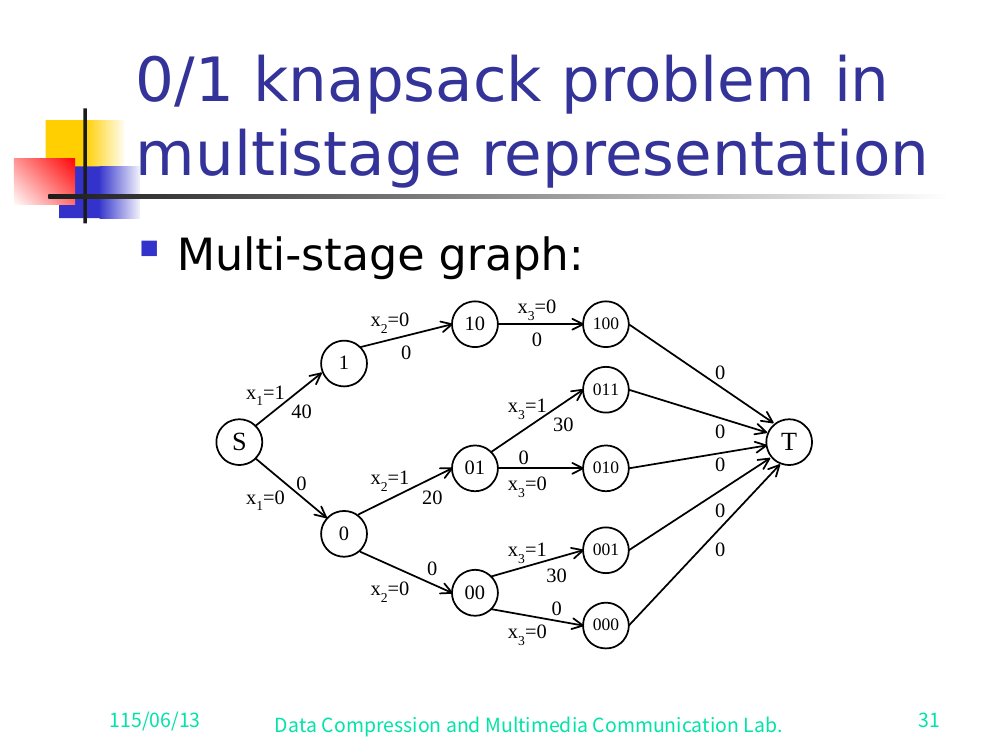
The longest path (max profit) from S to T in this multistage graph is the optimal solution. Deck answer (slides 31–32):在這張 multistage graph 上，從 S 到 T 的最長路徑（利潤最大）就是最佳解。投影片的答案（投影片 31–32）：
x₁ = 0, x₂ = 1, x₃ = 1 → 20 + 30 = 50
Let fᵢ(Q) = the value of an optimal solution using objects 1, 2, …, i with capacity Q.設 fᵢ(Q) = 只用物品 1, 2, …, i、容量為 Q 時最佳解的值。
fᵢ(Q) = max{ f_{i-1}(Q), f_{i-1}(Q − Wᵢ) + Pᵢ }
The optimal answer is fₙ(M).
(This is the backward-approach formulation of the same knapsack recurrence from §6/§7.)最佳答案是 fₙ(M)。
（這其實就是 §6／§7 那條 knapsack recurrence 的 backward-approach 寫法。）
n identifiers in sorted order: a₁ < a₂ < a₃ < … < aₙ.n 個 identifier，已排好序：a₁ < a₂ < a₃ < … < aₙ。Pᵢ, 1 ≤ i ≤ n: probability that aᵢ is searched (successful search → internal node).Pᵢ，1 ≤ i ≤ n：搜尋到 aᵢ 的機率（成功的搜尋 → 內部節點）。Qᵢ, 0 ≤ i ≤ n: probability that a search key x falls strictly between neighbors, aᵢ < x < a_{i+1} (unsuccessful search → external node), with sentinels a₀ = −∞, a_{n+1} = +∞.Qᵢ，0 ≤ i ≤ n：要找的 key x 剛好落在兩個相鄰 identifier 之間 aᵢ < x < a_{i+1} 的機率（失敗的搜尋 → 外部節點），兩端用哨兵 a₀ = −∞、a_{n+1} = +∞。Examples of identifier sets used in the deck: {3, 7, 9, 12} (slide 33, four candidate BSTs) and {4, 5, 8, 10, 11, 12, 14} (slide 35, the worked tree with external nodes). ✅ Verified against slides 33–35.投影片用到的 identifier 集合範例：{3, 7, 9, 12}（投影片 33，四棵候選 BST）和 {4, 5, 8, 10, 11, 12, 14}（投影片 35，帶外部節點實際畫出來的樹）。✅ 已對照投影片 33–35 核對。
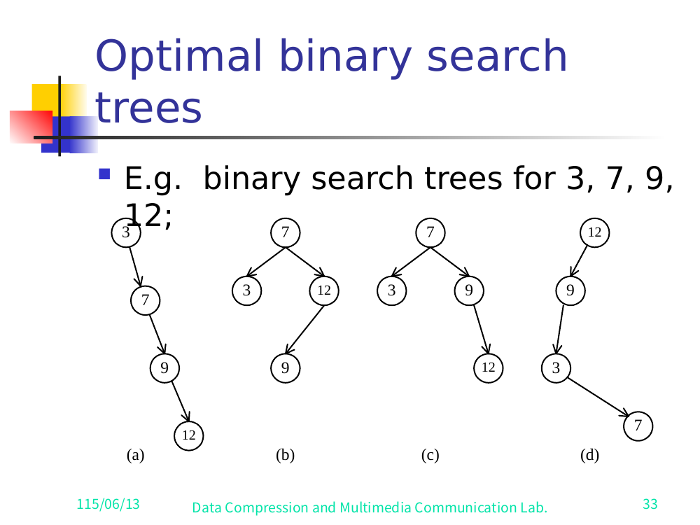
With the root at level 1, the expected cost is:把 root 當成 level 1，期望成本是：
Cost = Σᵢ Pᵢ · level(aᵢ) + Σᵢ Qᵢ · ( level(Eᵢ) − 1 )
where Eᵢ are the external (failure) nodes. (See Fig. "A Binary Tree with Added External Nodes" — slide 35, drawn for identifiers 4,5,8,10,11,12,14.)其中 Eᵢ 是外部（失敗）節點。（見 Fig.「A Binary Tree with Added External Nodes」— 投影片 35，是為 identifier 4,5,8,10,11,12,14 畫的。）
✅ Verified against slide 35. The slide prints
Σ_{i=1}^{n} Pᵢ·level(aᵢ) + Σ_{i=0}^{n} Qᵢ·(level(Eᵢ)−1), with "The level of the root : 1". The lower index on thePsum isi=1, on theQsum isi=0(external nodesE₀ … Eₙ). Slide 34 also confirms the probability normalizationΣ_{i=1}^{n} Pᵢ + Σ_{i=0}^{n} Qᵢ = 1.✅ 已對照投影片 35 核對。投影片印的是Σ_{i=1}^{n} Pᵢ·level(aᵢ) + Σ_{i=0}^{n} Qᵢ·(level(Eᵢ)−1)，並註明「The level of the root : 1」。P那個總和的下標從i=1起算，Q那個從i=0起算（外部節點E₀ … Eₙ）。投影片 34 也確認了機率歸一化Σ_{i=1}^{n} Pᵢ + Σ_{i=0}^{n} Qᵢ = 1。
The example tree (slide 35). For identifiers 4,5,8,10,11,12,14, the drawn BST has root 10; left child 5 (with children 4 and 8), right child 14 (left child 11, which has right child 12; 14's right is external E₇). External (failure) nodes E₀…E₆ hang off the leaves, E₅,E₆ off node 12. Slide 33 also shows four candidate BSTs (a)–(d) for the smaller set 3,7,9,12.範例樹（投影片 35）。對 identifier 4,5,8,10,11,12,14，畫出來的 BST root 是 10；左小孩 5（小孩是 4 和 8），右小孩 14（左小孩 11，11 又有右小孩 12；14 的右邊是外部節點 E₇）。外部（失敗）節點 E₀…E₆ 掛在葉子下面，E₅,E₆ 掛在節點 12 下。投影片 33 另外給了較小集合 3,7,9,12 的四棵候選 BST (a)–(d)。
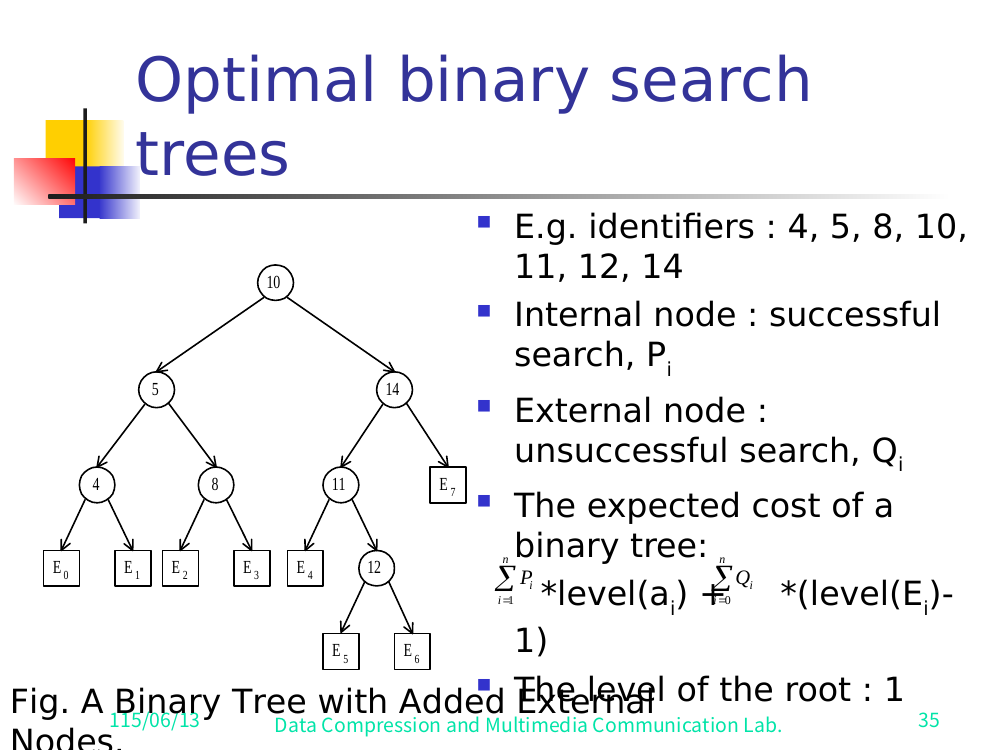
Let C(i, j) = cost of an optimal BST containing aᵢ, …, aⱼ.設 C(i, j) = 包含 aᵢ, …, aⱼ 的最佳 BST 的成本。
For the full tree, choosing root a_k:對整棵樹來說，選 a_k 當 root：
C(1, n) = min_k { Pk + [ Q₀ + (cost of left subtree weights) + C(1, k−1) ]
+ [ Qk + (cost of right subtree weights) + C(k+1, n) ] }
General formula (subtree on aᵢ … aⱼ, trying each a_k as root):一般式（子樹涵蓋 aᵢ … aⱼ，每個 a_k 都試著當 root）：
C(i, j) = min_{i ≤ k ≤ j} { Pk
+ [ Q_{i-1} + … + C(i, k−1) ]
+ [ Qk + … + C(k+1, j) ] }
= min_{i ≤ k ≤ j} { C(i, k−1) + C(k+1, j) + W(i, j) }
where W(i, j) = Q_{i-1} + Σ_{l=i}^{j}(P_l + Q_l) is the total weight of the subtree (the Q_{i-1} + … term). The + W(i,j) accounts for every node in the subtree dropping one level deeper when the subtree gains a root.其中 W(i, j) = Q_{i-1} + Σ_{l=i}^{j}(P_l + Q_l) 是這棵子樹的總權重（也就是 Q_{i-1} + … 這一項）。加上 + W(i,j) 是因為：當子樹多了一個 root，子樹裡每個節點都會往下掉一層。
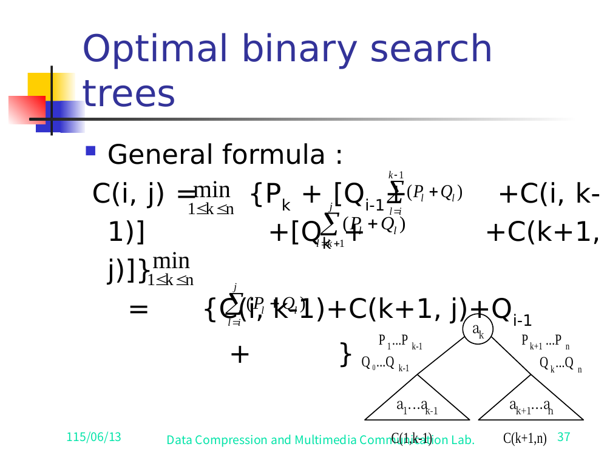
✅ Verified against slides 36–37. Slide 36 prints the root-
aₖformC(1,n) = min_{1≤k≤n} { Pₖ + [Q₀ + Σ_{i=1}^{k-1}(Pᵢ+Qᵢ) + C(1,k−1)] + [Qₖ + Σ_{i=k+1}^{?}(Pᵢ+Qᵢ) + C(k+1,n)] }. Slide 37 prints the general formC(i,j) = min_{1≤k≤n} { Pₖ + [Q_{i-1} + Σ_{l=i}^{k-1}(P_l+Q_l) + C(i,k−1)] + [Qₖ + Σ_{l=k+1}^{j}(P_l+Q_l) + C(k+1,j)] }and collapses it to= min { C(i,k−1) + C(k+1,j) + Σ_{l=i}^{j}(P_l+Q_l) + Q_{i-1} }— i.e.C(i,k−1)+C(k+1,j)+W(i,j). Both slides include the triangle diagram (rootaₖ, left subtreeC(1,k−1)/a₁…a_{k-1}with weightsP₁…P_{k-1}, Q₀…Q_{k-1}, right subtreeC(k+1,n)/a_{k+1}…aₙwithP_{k+1}…Pₙ, Qₖ…Qₙ).✅ 已對照投影片 36–37 核對。投影片 36 印的是 root-aₖ形式C(1,n) = min_{1≤k≤n} { Pₖ + [Q₀ + Σ_{i=1}^{k-1}(Pᵢ+Qᵢ) + C(1,k−1)] + [Qₖ + Σ_{i=k+1}^{?}(Pᵢ+Qᵢ) + C(k+1,n)] }。 投影片 37 印的是一般式C(i,j) = min_{1≤k≤n} { Pₖ + [Q_{i-1} + Σ_{l=i}^{k-1}(P_l+Q_l) + C(i,k−1)] + [Qₖ + Σ_{l=k+1}^{j}(P_l+Q_l) + C(k+1,j)] }，再把它收斂成= min { C(i,k−1) + C(k+1,j) + Σ_{l=i}^{j}(P_l+Q_l) + Q_{i-1} }— 也就是C(i,k−1)+C(k+1,j)+W(i,j)。兩張投影片都附了三角圖（rootaₖ，左子樹C(1,k−1)／a₁…a_{k-1}，權重P₁…P_{k-1}, Q₀…Q_{k-1}；右子樹C(k+1,n)／a_{k+1}…aₙ，權重P_{k+1}…Pₙ, Qₖ…Qₙ）。Note: slides 36–37 are heavily overlapped (formula and diagram collide), so the exact upper limit of the second inner sum on slide 36 is obscured; the slide-37 general form makes it unambiguous (it is
j, heren). No numericn=4value table appears — slide 38's "E.g. n=4" is a dependency diagram, not a cost table (see below).注意：投影片 36–37 疊得很嚴重（公式跟圖撞在一起），所以投影片 36 第二個內層總和的上界看不太清楚；不過投影片 37 的一般式講得很明確（就是j，這裡是n）。投影片裡沒有出現n=4的數值表 — 投影片 38 的「E.g. n=4」是一張依賴關係圖，不是成本表（見下面）。
O(n³)
Reasoning (slide 38, verbatim):
- When j − i = m, there are (n − m) values C(i, j) to compute.
- Each C(i, j) with j − i = m is computed in O(m) time (trying m+1 candidate roots).
- Summing over all m: O( Σ_{1≤m<n} m·(n − m) ) = O(n³).推導（投影片 38 原文）：
- 當 j − i = m 時，要算的 C(i, j) 共有 (n − m) 個。
- 每個 j − i = m 的 C(i, j) 都要花 O(m) 時間算（試 m+1 個候選 root）。
- 把所有 m 加總起來：O( Σ_{1≤m<n} m·(n − m) ) = O(n³)。
(See Fig. "Computation Relationships of Subtrees", slide 38.) ✅ Verified against slide 38: it shows the n=4 dependency DAG — C(1,2),C(2,3),C(3,4) feed C(1,3),C(2,4), which feed C(1,4) — and the closed sum O(Σ_{1≤m<n} m(n−m)) = O(n³).（見 Fig.「Computation Relationships of Subtrees」，投影片 38。）✅ 已對照投影片 38 核對：它畫了 n=4 的依賴 DAG — C(1,2),C(2,3),C(3,4) 餵給 C(1,3),C(2,4)，再餵給 C(1,4) — 以及封閉形式的總和 O(Σ_{1≤m<n} m(n−m)) = O(n³)。
<img class="figure" src="../render/A07full/slide-38.png" alt="OBST computation-relationships DAG for n=4: C(1,2),C(2,3),C(3,4) feed C(1,3),C(2,4), which feed C(1,4); complexity O(Σ_{1≤m
All items previously flagged as reconstructed have now been checked against the per-slide PNG renders in /home/brant/finals_study/algo/render/A07full/ (38 slides, vision pass 2026-06-13):之前標記為「重建」的項目，現在都已經對照 /home/brant/finals_study/algo/render/A07full/ 裡每張投影片的 PNG 圖檔核對過（共 38 張，視覺確認於 2026-06-13）：
d(S,F) predecessors (§4). ✅ Resolved (slide 9). Result d(S,F)=7 confirmed. The slide's term-labels read d(S,A)+d(A,F), d(S,B)+d(B,F) but the graph has no such edges; the correct labels are d(S,B)+d(B,F)=2+16 and d(S,C)+d(C,F)=5+2. The slide itself has a label typo; numbers are right.d(S,F) 的前驅節點（§4）。✅ 已釐清（投影片 9）。結果 d(S,F)=7 確認無誤。投影片上的標號寫成 d(S,A)+d(A,F), d(S,B)+d(B,F)，但圖裡根本沒這些邊；正確的標號是 d(S,B)+d(B,F)=2+16 和 d(S,C)+d(C,F)=5+2。是投影片本身的標號打錯，數字是對的。S→C→H→L→T = 8+5 = 13 all confirmed.Resource-allocation 的圖（§9）。✅ 已核對（投影片 19–21）。利潤表、節點命名、S 那個 stage 的邊、獲勝路徑 S→C→H→L→T = 8+5 = 13 全部確認。= O(n²·2ⁿ) all read off the slides.TSP 的 recurrence 跟複雜度（§10）。✅ 已核對（投影片 22–25）。cost matrix、tour 的 multistage graph、兩條 Held–Karp recurrence、base case，還有完整的複雜度總和 = O(n²·2ⁿ)，全都從投影片讀出來了。Σ_{i=1}^{n} Pᵢ·level(aᵢ) + Σ_{i=0}^{n} Qᵢ·(level(Eᵢ)−1).OBST 期望成本的總和式（§13）。✅ 已核對（投影片 34–35）。Σ_{i=1}^{n} Pᵢ·level(aᵢ) + Σ_{i=0}^{n} Qᵢ·(level(Eᵢ)−1)。+W(i,j) collapse confirmed. The "n=4" item (slide 38) is a dependency DAG, not a numeric cost table.OBST recurrence 的權重項（§13）。✅ 已核對（投影片 36–37）。兩種形式跟收斂成 +W(i,j) 的部分都確認了。「n=4」那個項目（投影片 38）是依賴 DAG，不是數值成本表。L table (slide 29), knapsack W/P table + staged graph (slides 30–31), answer 50 (slide 32).LCS／knapsack-multistage 的表（§11, §12）。✅ 已核對。完整的 LCS L 表（投影片 29）、knapsack 的 W/P 表 + 分 stage 的圖（投影片 30–31）、答案 50（投影片 32）。Source directory: /home/brant/finals_study/algo/render/A07full/ (per-slide PNG renders, 38 slides)
Extraction date: 2026-06-13 (vision pass over clean full-slide renders)來源資料夾：/home/brant/finals_study/algo/render/A07full/（每張投影片的 PNG 圖檔，共 38 張）
抄錄日期：2026-06-13（對乾淨的完整投影片圖檔做視覺確認）
The earlier carve (render/A07/) recovered only two decorative clip-art images (a cartoon angel, a red rose bud — both appear as slide decoration on slides 1 and 14) and no diagrams, because the DP figures were authored as native PowerPoint vector shapes. The full per-slide renders below now make every figure legible. Text-only slides are omitted.之前那次抽圖（render/A07/）只挖到兩張裝飾用的 clip-art（一個卡通天使、一朵紅玫瑰花苞 — 都是投影片 1 和 14 的裝飾），一張圖表都沒撈到，因為那些 DP 的圖是用 PowerPoint 原生向量圖形畫的。下面這份完整的逐張圖檔，現在每張圖都看得清楚了。純文字的投影片就略過。
Linear 4-node chain S → A → B → T with parallel edges. Weights: S→A: top arc 3, bottom arc 5, straight 1. A→B: top arc 2, straight 4, bottom arc 6. B→T: top arc 7, straight 5. Greedy "shortest" sum shown: 1 + 2 + 5 = 8.一條 4 個節點的線性鏈 S → A → B → T，節點間有多條平行邊。權重：S→A：上弧 3、下弧 5、直線 1。A→B：上弧 2、直線 4、下弧 6。B→T：上弧 7、直線 5。投影片上的 greedy「最短」總和：1 + 2 + 5 = 8。
Stages: S | A,B,C | D,E,F | T. Edge list read directly:各 stage：S | A,B,C | D,E,F | T。直接讀出來的邊列表：
| Edge邊 | w | Edge邊 | w | Edge邊 | w |
|---|---|---|---|---|---|
| S→A | 1 | A→D | 4 | D→T | 18 |
| S→B | 2 | A→E | 11 | E→T | 13 |
| S→C | 5 | B→D | 9 | F→T | 2 |
| B→E | 5 | ||||
| B→F | 16 | ||||
| C→F | 2 |
Captions: "greedy … S A D T 1+4+18 = 23"; "shortest path … S C F T 5+2+2 = 9."圖說：「greedy … S A D T 1+4+18 = 23」；「shortest path … S C F T 5+2+2 = 9。」
S→{A,B,C}→T投影片 6 — backward 的示意圖 S→{A,B,C}→TS→A=1, S→B=2, S→C=5, dashed d(A,T), d(B,T), d(C,T) into T. Eqn d(S,T)=min{1+d(A,T), 2+d(B,T), 5+d(C,T)}.S→A=1, S→B=2, S→C=5，虛線 d(A,T), d(B,T), d(C,T) 連到 T。式子 d(S,T)=min{1+d(A,T), 2+d(B,T), 5+d(C,T)}。
A→{D,E}→T投影片 7 — 示意圖 A→{D,E}→TA→D=4, A→E=11, dashed d(D,T), d(E,T). d(A,T)=min{4+18,11+13}=22.A→D=4, A→E=11，虛線 d(D,T), d(E,T)。d(A,T)=min{4+18,11+13}=22。
m resources, n projects, profit p(i,j). Table (rows project 1–4, cols 1–3 resources): row1 2,8,9; row2 5,6,7; row3 4,4,4; row4 2,4,5.m 份資源、n 個專案，利潤 p(i,j)。表（列為專案 1–4，欄為 1–3 份資源）：第 1 列 2,8,9；第 2 列 5,6,7；第 3 列 4,4,4；第 4 列 2,4,5。
5 stages. Stage 2 A=(0,1),B=(1,1),C=(2,1),D=(3,1); stage 3 E=(0,2),F=(1,2),G=(2,2),H=(3,2); stage 4 I=(0,3),J=(1,3),K=(2,3),L=(3,3); S,T singletons. S-edges: S→A=0, S→B=2, S→C=8, S→D=9. Dense interior labels (the profit increments) overlap; the S-edges and winning path are read with confidence.5 個 stage。Stage 2 A=(0,1),B=(1,1),C=(2,1),D=(3,1)；stage 3 E=(0,2),F=(1,2),G=(2,2),H=(3,2)；stage 4 I=(0,3),J=(1,3),K=(2,3),L=(3,3)；S、T 各只有一個節點。S 出去的邊：S→A=0, S→B=2, S→C=8, S→D=9。內部的標號（利潤增量）很密、疊在一起；只有 S 的邊跟獲勝路徑能讀得有把握。
S —8→ C —5→ H —0→ L —0→ T, 8+5=13. Allocation: 2 resources to project 1, 1 to project 2, 0 to projects 3 & 4.S —8→ C —5→ H —0→ L —0→ T，8+5=13。分配：2 份給專案 1、1 份給專案 2、專案 3 跟 4 各 0 份。
4-vertex directed graph. Cost matrix (from→to), ∞ on diagonal:
1: [∞,2,10,5] 2: [2,∞,9,∞] 3: [4,3,∞,4] 4: [6,8,7,∞].4 個節點的有向圖。Cost matrix（從→到），對角線是 ∞：
1: [∞,2,10,5] 2: [2,∞,9,∞] 3: [4,3,∞,4] 4: [6,8,7,∞]。
Root (1) → (1,2)=2, (1,3)=10, (1,4)=5; expands to the 3rd then 4th vertex then back to 1. Optimal branch (1)→(1,4)→(1,4,3)→(1,4,3,2)→1 = 5+7+3+2=17. Caption: "Fig. A Multi-Stage Graph Describing All Possible Tours of a Directed graph." Answer: 1,4,3,2,1 = 17.根 (1) → (1,2)=2、(1,3)=10、(1,4)=5；接著展開到第 3 個、第 4 個節點，再繞回 1。最佳分支 (1)→(1,4)→(1,4,3)→(1,4,3,2)→1 = 5+7+3+2=17。圖說：「Fig. A Multi-Stage Graph Describing All Possible Tours of a Directed graph.」答案：1,4,3,2,1 = 17。
(1,3,2)→(1,3,2,4) and (1,2,3)→(1,2,3,4) merge (last vertex 3, remaining {4,5,6} same) into one node; shown as (2),(4,5,6) & (3),(4,5,6) → (4),(5,6).(1,3,2)→(1,3,2,4) 跟 (1,2,3)→(1,2,3,4) 合成同一個節點（最後停的節點都是 3，剩下要走的 {4,5,6} 也一樣）；圖上畫成 (2),(4,5,6) 和 (3),(4,5,6) → (4),(5,6)。
g(1,V−{1}) = min_{2≤k≤n}{c_{1k} + g(k,V−{1,k})}; g(i,S) = min_{j∈S}{c_{ij} + g(j,S−{j})}; complexity n + Σ_{k=2}^{n-1}(n−1)·C(n−2,n−k)·(n−k) = O(n²·2ⁿ).g(1,V−{1}) = min_{2≤k≤n}{c_{1k} + g(k,V−{1,k})}；g(i,S) = min_{j∈S}{c_{ij} + g(j,S−{j})}；複雜度 n + Σ_{k=2}^{n-1}(n−1)·C(n−2,n−k)·(n−k) = O(n²·2ⁿ)。
Grid of L_{i,j} cells with arrows right, down, and diagonal-down (the three recurrence dependencies), flowing toward L_{m,n}.一格一格的 L_{i,j} 網格，箭頭往右、往下、往右下斜（就是 recurrence 的三種依賴），全部朝 L_{m,n} 流。
See the full table in §11. Trace-back circles 1→2→3→4 give LCS = a c a d.完整的表看 §11。trace-back 圈起來的 1→2→3→4 給出 LCS = a c a d。
M=10; objects (i, Wᵢ, Pᵢ): (1,10,40), (2,3,20), (3,5,30).M=10；物品 (i, Wᵢ, Pᵢ)：(1,10,40), (2,3,20), (3,5,30)。
S branches x₁=1(w 40) / x₁=0(w 0); each branches x₂ (w 20 if 1) then x₃ (w 30 if 1) then weight-0 edges to T. Node labels are partial decision strings (1,0,10,01,00,100,011,010,001,000).S 分岔成 x₁=1(w 40) / x₁=0(w 0)；每個再依 x₂ 分岔（=1 時 w 20）、再依 x₃ 分岔（=1 時 w 30），最後接權重 0 的邊到 T。節點標號就是部分決策字串（1,0,10,01,00,100,011,010,001,000）。
(a) right-going chain 3→7→9→12; (b) root 7, children 3 & 12, 12's left child 9; (c) root 7, children 3 & 9, 9's right child 12; (d) left-going-ish 12→9→3→7.(a) 一路往右的鏈 3→7→9→12；(b) root 7，小孩 3 和 12，12 的左小孩是 9；(c) root 7，小孩 3 和 9，9 的右小孩是 12；(d) 偏往左的 12→9→3→7。
Identifiers 4,5,8,10,11,12,14. Root 10; left 5 (children 4,8), right 14 (left 11 with right child 12; right external E₇). External nodes E₀…E₆ at the leaves (E₅,E₆ under 12). Cost formula Σ_{i=1}^{n}Pᵢ·level(aᵢ) + Σ_{i=0}^{n}Qᵢ·(level(Eᵢ)−1), root at level 1.Identifier 4,5,8,10,11,12,14。Root 10；左邊 5（小孩 4,8），右邊 14（左小孩 11，11 有右小孩 12；右邊是外部節點 E₇）。外部節點 E₀…E₆ 在葉子上（E₅,E₆ 掛在 12 下）。成本公式 Σ_{i=1}^{n}Pᵢ·level(aᵢ) + Σ_{i=0}^{n}Qᵢ·(level(Eᵢ)−1)，root 在 level 1。
Root-aₖ form (36) and general C(i,j) form (37); both with the split-at-root triangle: left C(i,k−1) over a₁…a_{k-1} (weights P₁…P_{k-1},Q₀…Q_{k-1}), right C(k+1,n) over a_{k+1}…aₙ (weights P_{k+1}…Pₙ,Qₖ…Qₙ). Collapses to C(i,j)=min_k{C(i,k−1)+C(k+1,j)+W(i,j)}.root-aₖ 形式（36）跟一般的 C(i,j) 形式（37）；兩張都有「從 root 切開」的三角圖：左邊 C(i,k−1) 涵蓋 a₁…a_{k-1}（權重 P₁…P_{k-1},Q₀…Q_{k-1}），右邊 C(k+1,n) 涵蓋 a_{k+1}…aₙ（權重 P_{k+1}…Pₙ,Qₖ…Qₙ）。收斂成 C(i,j)=min_k{C(i,k−1)+C(k+1,j)+W(i,j)}。
C(1,2),C(2,3),C(3,4) → C(1,3),C(2,4) → C(1,4). Complexity O(Σ_{1≤m<n} m(n−m)) = O(n³).C(1,2),C(2,3),C(3,4) → C(1,3),C(2,4) → C(1,4)。複雜度 O(Σ_{1≤m<n} m(n−m)) = O(n³)。
The note's reconstructed set
S→A=1, S→B=2, S→C=5, A→D=4, A→E=11, B→D=9, B→E=5, B→F=16, C→F=2, D→T=18, E→T=13, F→T=2
✅ MATCHES slide 5 exactly — every edge weight confirmed by direct reading of the rendered figure. All dependent results hold: d(C,T)=4, d(A,T)=22, d(B,T)=18, d(S,T)=9, d(S,D)=5, d(S,E)=7, d(S,F)=7.筆記裡重建的這組
S→A=1, S→B=2, S→C=5, A→D=4, A→E=11, B→D=9, B→E=5, B→F=16, C→F=2, D→T=18, E→T=13, F→T=2
✅ 跟投影片 5 完全吻合 — 每個邊權重都是直接讀圖確認過的。所有衍生的結果也都站得住腳：d(C,T)=4、d(A,T)=22、d(B,T)=18、d(S,T)=9、d(S,D)=5、d(S,E)=7、d(S,F)=7。
Questions on anything here? Ask your teacher (the agent) — that's what I'm for.
The original slides are rendered as images in render/ for eyeball validation.這裡有任何看不懂的嗎？直接問你的老師（就是這個 agent）— 我就是來幫你的。
原始投影片都算成圖檔放在 render/ 裡，你可以自己對照看看。